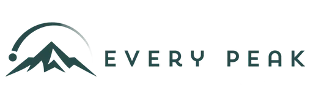
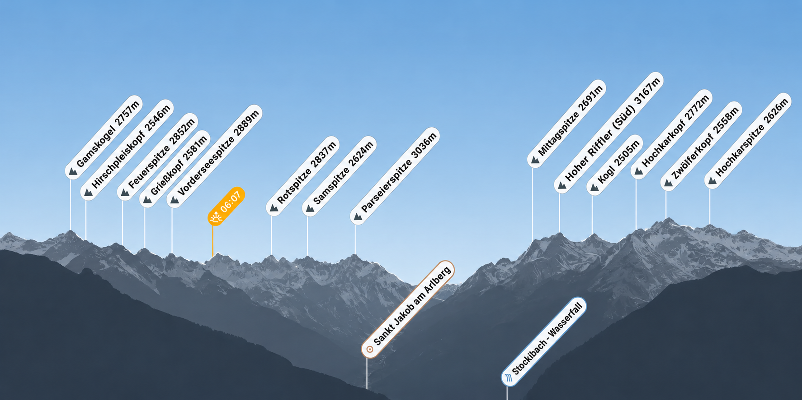
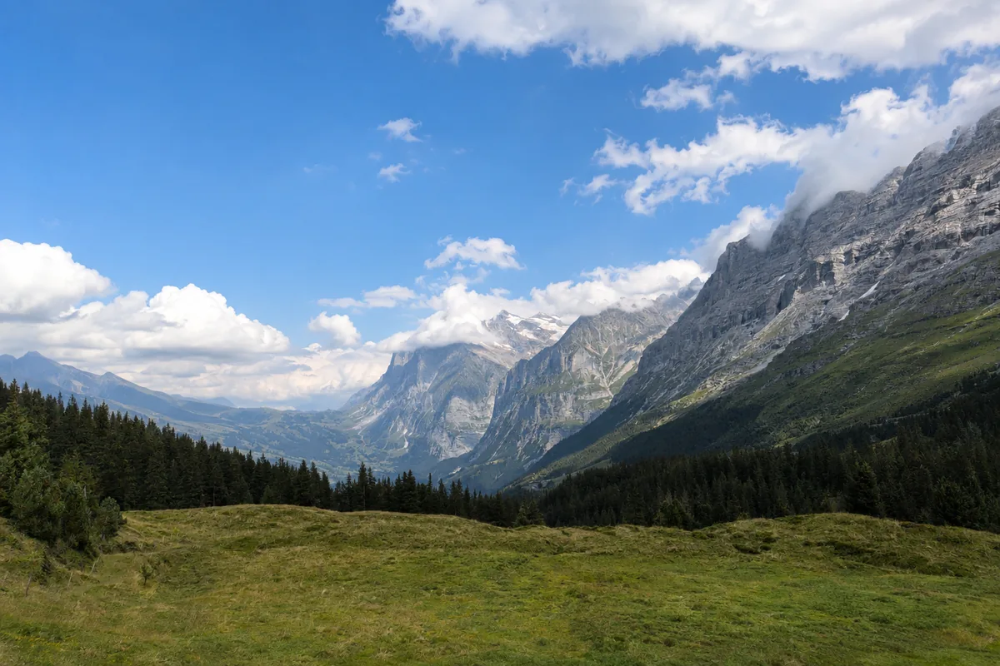
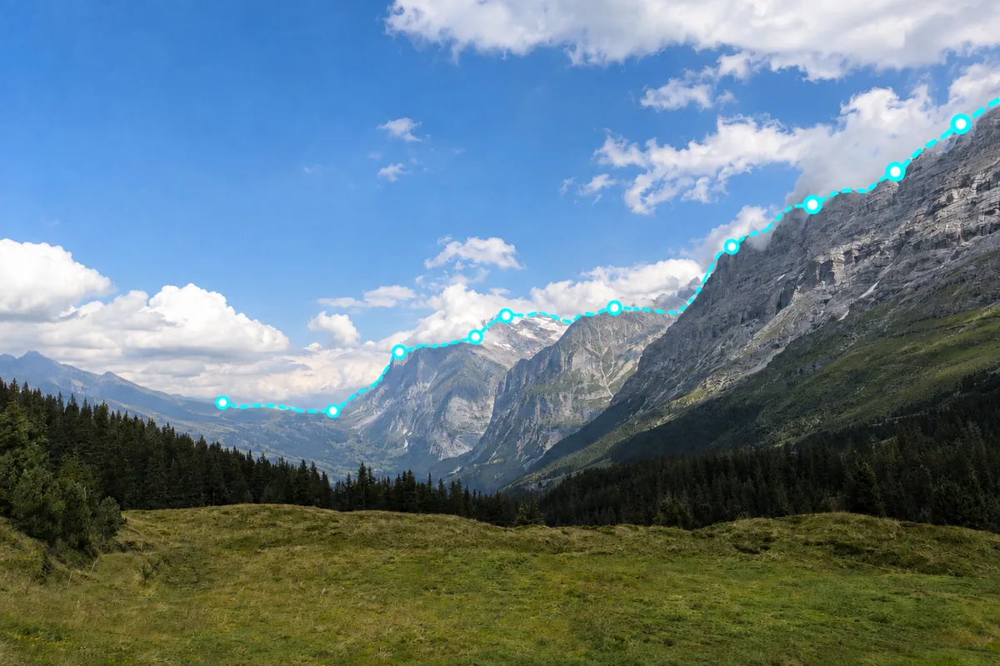
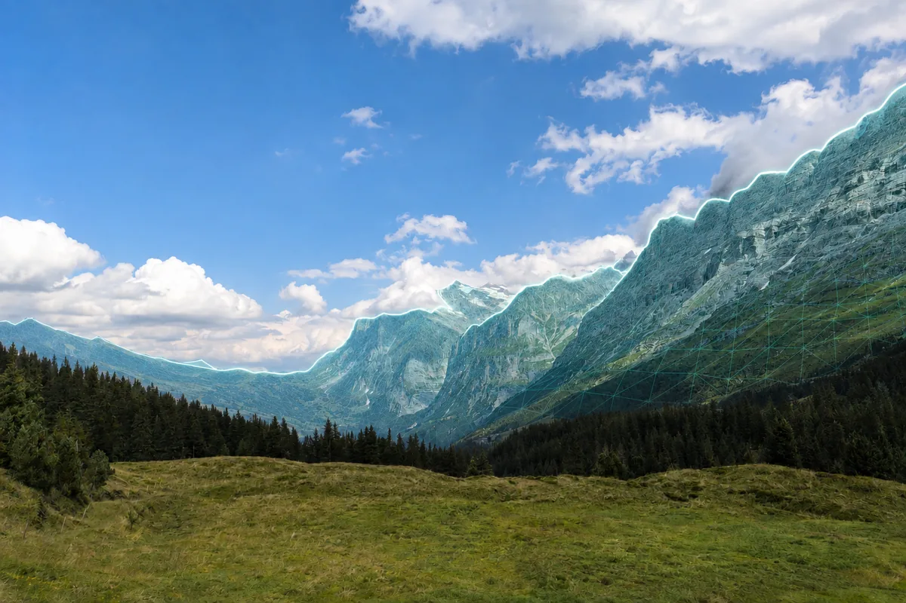
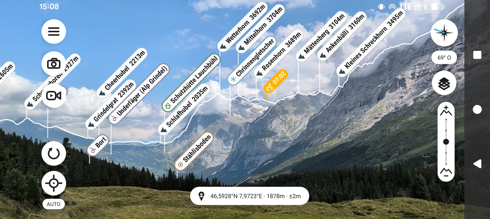

Every Peak · Branding, Web Design & UI/UX Design · 2026
Every peak. Instantly recognised.
A digital mountain experience that turns complex computer vision into a clear, intuitive product that works offline worldwide.
View live website ↗mountains
in
your
hand.
An app with vision
The website translates the idea behind Every Peak into a clear, visually guided brand experience. Large-format mountain panoramas, reduced typography and calm animations make automatic peak recognition instantly understandable without placing the technology in the foreground. The experience leads from the first camera view through the product’s functionality and offline use to the app download. The result is a responsive website that consistently connects precision, orientation and adventure.

Complex technology. One simple glance.
When facing a mountain panorama, people want to know which peaks lie on the horizon. Existing solutions often require compass calibration, manual alignment or a permanent internet connection.
Every Peak reduces this technical process to one natural gesture: point the camera at the landscape. The app detects the silhouette, compares it with terrain data and places names, elevations and locations precisely in the view.
Visual system
Technically precise. Naturally intuitive.
The calm brand world combines alpine green, light natural tones and reduced typography. Logo, circle and mountain arc were animated as a distinct system—subtle, slow and never distracting from orientation.


How it works
From panorama to precise labels.




Product decisions that matter outdoors.
- 01Offline worldwide: Regions can be prepared and used without reception.
- 02Automatically aligned: The app replaces manual shifting and repeated compass calibration.
- 03Bilingual: The website detects the browser language and still allows manual switching.
- 04Clear download flow: A dedicated page guides people directly to Google Play or the App Store.
- 05Performance: Optimised images, lazy-loaded videos and stable posters improve perceived loading speed.
The outcome
Orientation that feels effortless.
The result is a distinctive digital product with a clear visual identity, precise user guidance and a website that makes the technical advantage immediately tangible: automatically aligned, available offline and ready to use worldwide.